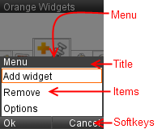
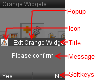
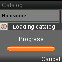
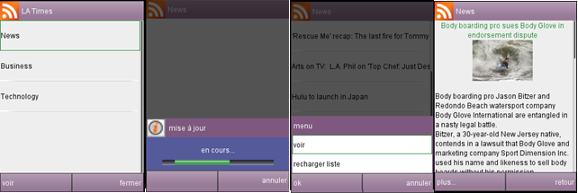

To send message on "Board" channel, we use the sendMessage(...) method of
Browser class.
Example:
'INIT' message is use to initialize title and soft keys.
Example:
'LOAD' message is use to load another VRML page/file.
Note:
Namespace is not changed.
Use 'LOAD_WIDGET' to change the Namespace.
Example:
'LOAD_WIDGET' message is use to load another widget (load widget page and change the Namespace).
Example:
'MENU' message is use to display a menu.
Note:
Catch the 'ANSWER' message to read user selection.

Example:
See Menu tutorial.
'POPUP' message is used to display a popup frame.
Note:
Catch the 'ANSWER' message to read the popup result.

Example:
See Popup tutorial.
'POPUP_AUTO_HIDE' message is used to hide the popup frame.
See Popup tutorial.
'PROGRESS' message is used to display and update a progress bar into current popup frame.
Note:
Progress require an opened popup.

Example:
'RESET' message is used to quit widget. Load carousel page and quit the widget Namespace.
'CATALOG_UPDATE' message is used to update the catalog.
Note:
Don't use this message. This message is only use by Catalog and Manager.
Example:
Message is sent by Manager when widget developper want to hide title and softkeys bar (canvas space optimization).
message.set_data[0]: 'HIDE_BARS'
You should hide bars only when it has sense: on small size resolution. You should always think of an action that will display the bars again and communicate this action to the user before hiding the bar (ex: "Press Fire button to show bars") so that user will never be blocked.
Message is sent by Manager when widget developper want to show title and softkeys bar once they were hidden.
message.set_data[0]: 'SHOW_BARS'
SHOW_BARS shall be used only associated with the HIDE_BARS message. By default, bars are always displayed.
Message is sent by Manager when widget developper want to show a loading hourglass.
message.set_data[0]: 'SHOW_WAIT'
You should hide the loading hourglass (by message HIDE_WAIT) when the data you wanted to load is loaded. This mechanism is complementary to the Loader prototype. This mechanism is used to display an unknown time loading whereas Loader is often used fo known time loading.
Message is sent by Manager when widget developper want to stop the showing of a loading hourglass.
message.set_data[0]: 'HIDE_WAIT'
HIDE_WAIT shall be used only associated with the SHOW_WAIT message.
Message is sent by Manager when widget developper wants to define some customization colors. Available color customization are background color, softkeys and title bar, background color of popup, focus color (list selection, text title colors, progressbar color). Manager always sets the current theme color values in 4 cookies: 'theme.bg', 'theme.bar', theme.alert' and 'theme.focus'.
Browser.sendMessage ('Board', 'THEME', bgColor, barsColor, popupColor, focusColor);
Colors value are set in hexadecimal. Color of the scrollbar(grey), color of other texts (black in scrollable text content and in menu items, white otherwise), and color of the menu background (white) are not customizable yet.
Default values are: 'FFFFFF' for background color, '3D3D3D' for title and softkeys bars color, '666666' for alert background color and 'FF6E00' for focus color. Those values are called "application theme values" and can change if the application is rebranded for partnership. When a widget defines a specific THEME, it will crush the application theme.
User can fall back to initial theme configuration by calling Browser.sendMessage ('Board', 'THEME'); It will reset theme to the application theme. Reseting theme to application's one is automatically done by manager when the widget is closed.
Example:
To read messages on "Board" channel, we use a Message.
1. Define the Message to read message.
2. Write a JavaScript function to read and process messages.
3. Link "Board" channel and data_changed(...) function.
Message is sent by Manager.
This message is used to read menu or popup result.
Message is sent by Manager when left softkey is pressed.
message.set_data[0]: 'LSK'
See softkeys tutorial.
Message is sent by Manager when right softkey is pressed.
message.set_data[0]: 'RSK'
See softkeys tutorial.